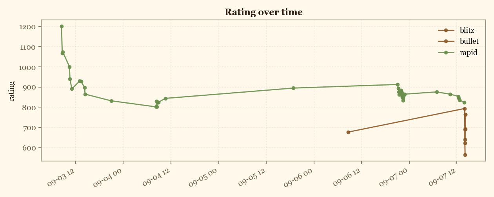
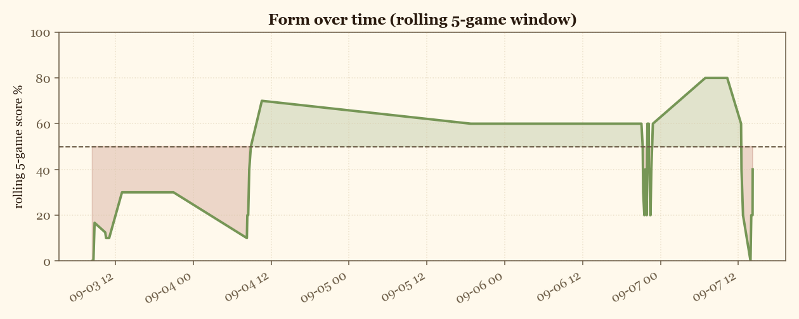
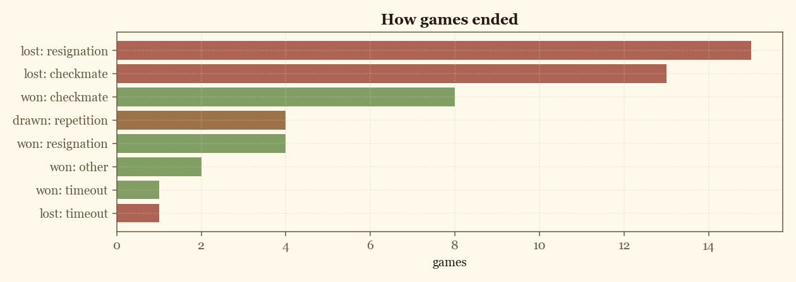
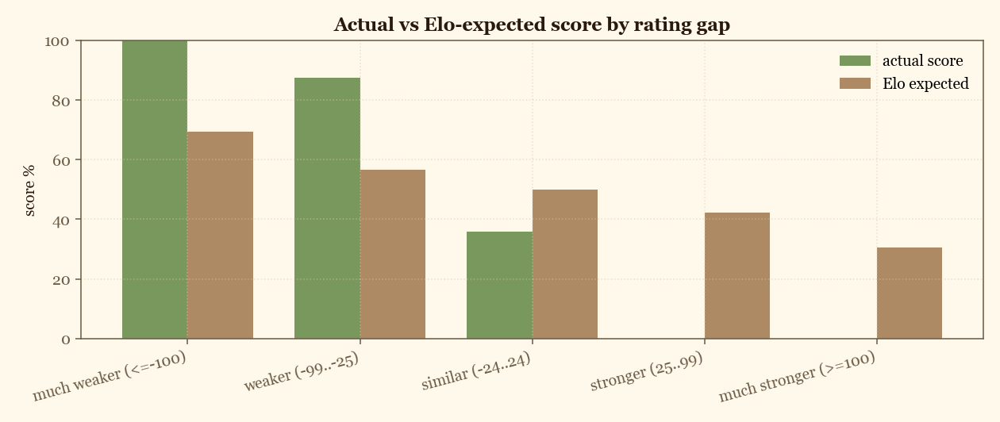
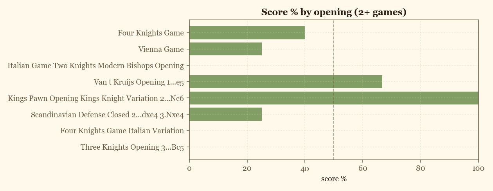

chess.com analytics · auto-generated from my games
| color | games | score |
|---|---|---|
| black | 25 | 32.0% |
| white | 23 | 39.1% |
| class | games | score |
|---|---|---|
| rapid | 39 | 35.9% |
| blitz | 5 | 20.0% |
| bullet | 4 | 50.0% |



Score % by opponent rating gap, next to the score Elo predicts. Positive delta means overperformance.

| rating gap | games | actual | expected | delta |
|---|---|---|---|---|
| much weaker (<=-100) | 5 | 100.0% | 69.3% | +30.7 |
| weaker (-99..-25) | 8 | 87.5% | 56.7% | +30.8 |
| similar (-24..24) | 14 | 35.7% | 50.0% | -14.3 |
| stronger (25..99) | 15 | 0.0% | 42.2% | -42.2 |
| much stronger (>=100) | 6 | 0.0% | 30.5% | -30.5 |

| opening | games | score |
|---|---|---|
| Four Knights Game | 5 | 40.0 |
| Vienna Game | 4 | 25.0 |
| Italian Game Two Knights Modern Bishops Opening | 4 | 0.0 |
| Van t Kruijs Opening 1...e5 | 3 | 66.7 |
| Kings Pawn Opening Kings Knight Variation 2...Nc6 | 2 | 100.0 |
| Scandinavian Defense Closed 2...dxe4 3.Nxe4 | 2 | 25.0 |
| Four Knights Game Italian Variation | 2 | 0.0 |
| Three Knights Opening 3...Bc5 | 2 | 0.0 |
| opponent | games | score | avg opp rating |
|---|---|---|---|
| WillSchess12 | 3 | 0.0% | 905.0 |
| played | color | opponent | result | opening |
|---|---|---|---|---|
| 2026-09-07 14:11 | white | SrSchuster (677) | win | French Defense Knight Variation Two Knights Variation 3...dxe4 4.Nxe4 |
| 2026-09-07 14:10 | black | Bonzo232 (852) | timeout | Kings Fianchetto Opening 1...e5 2.Bg2 Nf6 |
| 2026-09-07 14:07 | white | RavDin (632) | win | Four Knights Game |
| 2026-09-07 14:05 | black | hamoopaia (814) | checkmated | Vienna Game Max Lange Defense 3.Bc4 Nf6 |
| 2026-09-07 14:04 | black | Bamise6 (638) | resigned | Italian Game Knight Attack Normal Variation 5.exd5 |
| 2026-09-07 14:01 | white | lalo444888 (714) | resigned | Vienna Game |
| 2026-09-07 14:00 | white | Srinivasa84 (747) | checkmated | Vienna Game 2...d6 |
| 2026-09-07 13:59 | white | aedonChess (666) | win | Caro Kann Defense Two Knights Attack...4.Nxe4 Nf6 5.Nxf6 gxf6 |
| 2026-09-07 13:52 | black | faltah2003 (833) | resigned | Queens Gambit Declined Marshall Defense |
| 2026-09-07 12:42 | black | ilTalpone (819) | checkmated | Queens Gambit Accepted 3.Nf3 Nf6 4.e3 e6 5.Bxc4 |
| 2026-09-07 12:28 | black | Riya_Sarda27 (893) | resigned | Four Knights Game |
| 2026-09-07 12:24 | white | sukaaamachaaa (850) | checkmated | Three Knights Opening 3...Bc5 |